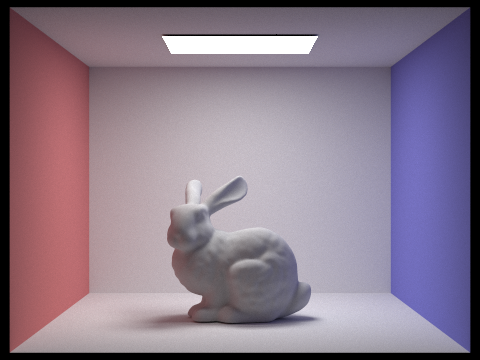

In this project, I explored ray generation, ray-scene intersection, acceleration, direct and indirect lighting, and some basic materials. It is very interesting to see different implementations affect the qualities of the image. I also had a long journey debugging throughout the whole project.
Part 1: Ray Generation and Intersection
I'll begin with generating ray. In below diagram from lecture slide, we cast rays from the pinhole through the image plane and then into the scene. The image plane rendered will be the output. In this part, for each pixel in the frame, one camera ray is constructed and casted into the scene. If the ray intersects any objects, we want to compute the color of the object at the intersection point and assign the color to the corresponding pixel.
|
|
To generate rays, we need to compute the origin and direction of the ray in Camera::generate_ray function. Below is the ray formula. The origin of the ray is where the camera is in the world space.
ray = origin + t * direction
We want to transform the x, y coordinates which are range between [0, 1] into a point in the image plane. So we want the bottom left to be (0, 0) and top right to be (1, 1) on the plane. The corresponding x, y can be calculated with
X = bottom_left.x + (top_right.x - bottom_left.x) * x
Y = bottom_left.y + (top_right.y - bottom_left.y) * y
The camera looks along the -z axis, so I set the direction z axis to be 0. This will be the ray in camera space. Multiply it by c2w matrix will transform it to world space.
For each pixel, we want to sample ns_aa random rays at different locations and take the average of them to cast it to the pixel. Or we can cast a single ray to the center of the pixel. This value can be changed using the command line for later on.
Triangle intersect
I used Möller-Trumbore algorithm to detect ray-triangle intersection. The intersect point is defined as
P = wA + uB + vCwhere w, u, v are the barycentric coordinates and A, B, C are the triangles vertices, with condition
w + u + v = 1 . We also have the ray equation
P = O + tD
where t is the distance from the ray's origin to the intersection point P. Using this two equations, we can compute t, w, u, v using Crammer's rule. To check if intersection exists, I checked if u, v are between [0, 1], u + v <= 1 and t within [min_t, max_t].
Sphere intersect
I used the equations from lecture slides to detect sphere intersect as below:
a = ray.d * ray.d
b = 2 * (ray.o - sphere.center) * ray.d
c = (ray.o - sphere.center)^2 - R^2
t = (-b +/- sqrt(b^2 - 4ac)) / 2a
Let delta = b^2 - 4ac, I use the value of delta to check if theres intersect.
no intersection if delta < 0
one intersection if delta = 0
two intersections if delta > 0
I also set the distance from ray's origin to intersection P as min(t0, t1) if there are two intersections. No intersection can also happen when t is not within the range of [min_t, max_t]. Below is the scene from part 1
|
|

|
|
|
Part 2: Bounding Volume Hierarchy
Constructing BVH -- Acceleration structure
BVH is a square box structure allows us to test ray intersection with axis-aligned planes rather then evey single primitives in the scene. First, I pick the greatest dimension in to split the object by comparing x, y, z axis values. Let say we choose x here. I then split the primitives into two vectors where prims1 has primitive's centroid less than centroid_box on x, otherwise storing in prims2. I recursive call construct_bvh on the left and right node to split up the primitives. When the case that all the primitives assign to the same vector, I split them in half by their midpoint on x. This prevents the infinite recursive call on the same primitive vector.
Below are the process of spliting the bounding volumne.

|
Intersecting BBox
We use the bounding box to test if a ray intersects. I take the maximum of the min x, y, z as tmin, and take the minimum of the max x, y, z as tmax. There is no intersection when it is one of the below cases:
tmin > tmax
tmin > ray.max_t
tmax < ray.min_t
I had a hard time debugging on this function. Because I understood the concept, but when I assigned tmin and tmax, I didn't check tmin is actually less then tmax. I kept getting black screen. Until I realized that I never compare these two values. I fixed it by swaping the two values.
Intersecting BVHAccel
We avoid checking every primitive in the scene by checking if the ray hits the BVH's bounding box.
If it does intersect with bounding box, we check if it is a leaf node. If it is, we just need to check every primitives in the box and see if there is a hit.
If it is not a leaf node, we traverse the left and right node by recursively calling BVH intersect function on its children. Below are some image rendered.

|
Part 3: Direct Illumination
In this part, we want to see the effect of only indirect lighting on the scene.
If a light is delta light, all the samples fall on the same location. So I just take one sample light.
If it is not a delta light, I take whatever number of samples we want by pass it in the command line. I then take the average of all the samples and added to L_out.
I create a shadow ray origins at the hit point to see if it intersect with any objects before it reaches the location of the light currently is sampling. If it does hit an object, we don't want this sample. If it doesn't intersect with any object, we calculate the bsdf value and multiplied by w_in.z divide by probability, and add the final value to the sum of the samples. For each light, I take average of all the samples that don't intersect with any object and add it to the final light_out.
Below are some pictures rendered with direct illumination:
Direct lighting rendered with different light rays
From below pictures, we can see that the higher the light rays, the softer the shadows are. It is very noise with 1 light ray. So it is expected that it will look way softer if I run 1024 light ray.
|
|

|

|

|
Part 4: Indirect Illumination
Indirect illumination is similar to direct illumination.
In direct lighting from the previous part, we don't see the color from the walls on spheres because there is no direct light from the wall to the spheres. But in indirect light, we see slight pink and blue color from the walls on the spheres. These are indirect lights. They are not as strong as the light source because part of the energy lost in the transaction.
The difference in the implementation here compare to direct lighting is that, we sample the BSDF at the hit point and recursively trace a ray in that sample direction. We also introduce two new constants here. They are there to make sure rays are not terminated too early. The higher those two constants are, the more noise the render has. I tried with high constants like 10 or 20, but it doesn't seem like much difference. It may require a very large constant to see the difference.
Both direct and indirect illumination
Comparison of indirect and direct lighting
You can see there are more noise in the image when indirect light is included. But there aren't much difference between indirect and the one with both.
|
|
|

|
Different max_ray_depth on CBbunny.dae with sample/pixel = 1, light ray = 4
You can see a big difference between m = 0 and m = 100. It is way brighter in m = 100. Because there are more lights reflected in the scene, so it makes the scene brighter.
|
|
|
|
|
|
|
|
rendered views with various sample-per-pixel rates
|
|
|
|
|
|
|
|
|
|
|
Part 5: Adaptive Sampling
In this part, I implemented adaptive sampling. Its very straight forward, its mostly about math. I check if I is less then or equal to maxTolerance * mu. If it is, the pixel has converged and I break the loop. If not, it continue to get more samples. I made a mistake here at the beginning, which causes me to debug for hours... I used the num_samples as n in the calculation, while I supposed to use the actual number of samples as n. I fixed it by creating a count variable which I increment by 1 in each iteration called.
Below is rendered in 2048 samples/pixel + max_ray_depth of 5
|  |